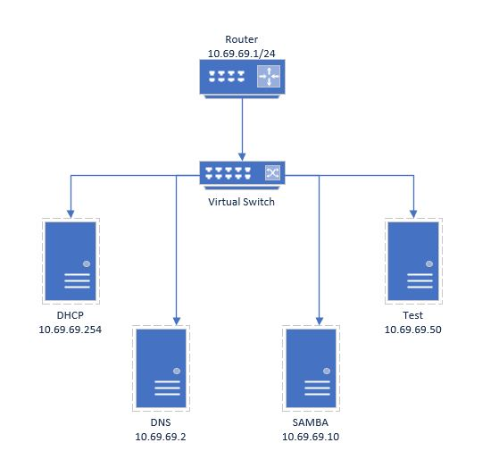

The following network diagram lays out how the virtual network will be intended to work. We will be using the 10.69.69.0/24 network with the .100 to .199 range being reserved for DHCP assignments. The router will be set to 10.69.69.1, the DHCP server will be at 10.69.69.254, the DNS server will be 10.69.69.2, and the SAMBA server will be at 10.69.69.10 with a domain name of fileserver.cy.cts.test. At the botoom of the page, you will see an example of how terminal commands will be displayed throughout the following pages.

ls -al
d-r-- 10/14/2015 5:06 PM Downloads
d-r-- 10/14/2015 5:06 PM Favorites
d-r-- 10/14/2015 5:06 PM Links
cd
ps aux